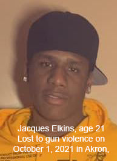

Timeline photos
Jac’Ques Elkins, 21, was shot in the head on October 1. He was a witness in the trial of Terrian Wray, 21, of Akron, which ended in a mistrial Aug. 31.
Elkins was chased several times and was shot at near the University of Akron.
And the #1 thing the police want us to do is come forward and snitch. That's their BIG plan to make Akron safer.
We are so fucked.